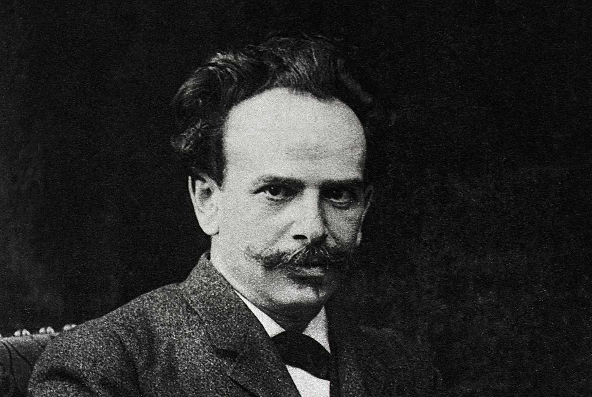

A aculturação é um processo sociológico e antropológico que se dá no encontro entre duas culturas, ocorra ele de maneira pacífica ou não. A partir desse encontro, os diferentes grupos estabelecem trocas que resultam na modificação de suas culturas.
Isso se dá pela assimilação de elementos externos e perda de traços internos. Alguns teóricos defendem que, mesmo quando o encontro de dois grupos culturais se dá de maneira violenta e um detém o poder de impor sua cultura sobre o outro, as trocas acontecem. E, nesse sentido, o grupo dominante também sofreria o processo de aculturação.
As Perspectivas Sobre o Processo de Aculturação
 Franz Boas: antropólogo teuto-americano.Em uma perspectiva essencialista, a aculturação resultaria na destruição da cultura original de determinado grupo. Essa concepção está presente no pensamento de Franz Boas (1858-1942), um pesquisador dos Estudos Culturais que contribuiu bastante para o conceito, e também preocupa antropólogos brasileiros quando refletem acerca de quais impactos o contato da sociedade urbanizada com as comunidades indígenas isoladas poderia trazer para aqueles povos.
Historicamente, esse processo resultou na absorção de elementos da cultura indígena, que são observáveis no vocabulário da língua portuguesa falada no Brasil, na incorporação de alimentos, elementos de dança e saberes tradicionais ao que convencionou ser a cultura brasileira. Por outro lado, até mesmo pelo processo violento como se deu o encontro dos grupos indígenas com outros povos, algumas comunidades deixaram de existir, línguas foram gradualmente perdidas e o modo de vida urbano se tornou preponderante nas aldeias.
A segunda perspectiva acerca do processo de aculturação acredita que, no processo de absorção dos elementos do outro grupo, é possível adequá-los aos seus próprios padrões. Aqui em vez da destruição, aconteceria um processo de assimilação cultural. Adepto desse pensamento, Melville Jean Herskovitz (1895-1963) chegou a propor uma escala capaz de quantificar o quanto um grupo teria assimilado da cultura externa e o quanto da sua teria sido preservada.
Outros pensadores que corroboram com a ideia de que a assimilação de uma cultura não é um processo unilateral são Roger Bastide e Gilberto Freyre. Ainda que reconheçam não se tratar de um processo simétrico, ou seja, em que os grupos envolvidos apresentam posições equilibradas, ambos concordam que há absorção de um ou outro elemento por parte daquele que apresenta posição de dominância
Tipos de Aculturação
Conforme a natureza com que se dá o contato entre as culturas, esse processo pode ser descrito de duas formas: aculturação direta ou indireta. O primeiro diz respeito às manifestações mais violentas, está associado a eventos históricos como a colonização, as guerras e a imigração. O processo relacional entre os grupos culturais se dá em presença física e, muitas vezes, há a obrigatoriedade de abandono dos próprios padrões culturais.
Durante o processo de colonização, por exemplo, os portugueses promoveram um processo de catequização dos indígenas, impondo a fé católica e os obrigando a abandonar suas línguas e crenças. O mesmo foi feito com os povos negros submetidos à escravidão no Brasil, que se viram forçados a falar outra língua e ocultar a crença nas divindades das religiões de matriz africana.
O sincretismo religioso, característica marcante do país, é resultado de uma forma de resistência encontrada pelas comunidades negras para continuarem cultuando seus deuses. A cultura brasileira, como conhecemos hoje em dia, é o resultado do processo de aculturação que se deu, majoritariamente, entre os portugueses, indígenas e populações africanas.
A aculturação direta, por sua vez, não é violenta se considerarmos apenas a definição de violência física. Contudo, partindo de uma perspectiva que inclui a violência simbólica, esse processo pode ser entendido como tal. Aqui o contato entre as culturas é potencializado pelos meios de comunicação, especialmente pela difusão de padrões de vida associados a ideais de sucesso e desenvolvimento. Essa exposição promove modificações no modo de agir e pensar de alguns grupos sociais.
No mundo globalizado, os Estados Unidos, como possuidor de grande poder na indústria cultural de filmes, músicas e até mesmo pela centralidade da língua inglesa, exerce grande influência na cultura de outros países. Desse modo, a globalização emerge como um potencializador das trocas entre as diferentes culturas. Contudo, aquela que possui mais acesso aos recursos tecnológicos necessários para a produção e difusão dos artefatos que popularizam seu modo de vida detém mais influências sobre outras.
Texto de: Educa Mais Brasil ·